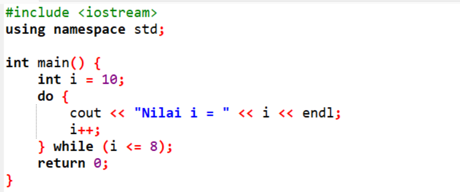

1. Berikut yang bukan merupakan type data?
2. Output dari program di bawah ini adalah?
3. Output dari program di bawah ini adalah?
4. Pemanfaatan teknologi informatika dalam bidang pertanian dapat membantu petani meningkatkan hasil panen melalui pemantauan cuaca dan kondisi tanah. Hal ini termasuk dampak ...
5. Salah satu dampak negatif dari penggunaan informatika di bidang pertanian adalah